130 SpatialData objects · 14,092,170 cells · 10 organs. Thumbnails colour cells by annotated cell type, or by Leiden cluster where no annotation exists yet. Click a card for the morphology image, donor-core and label panels; cards marked H&E also open the registered H&E stain.
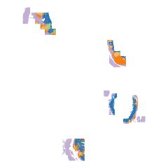
130,665 cells · cell type H&E
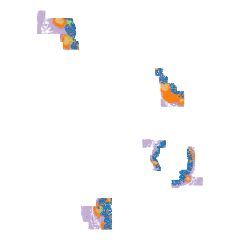
145,165 cells · cell type H&E
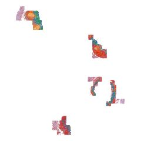
105,362 cells · cell type H&E
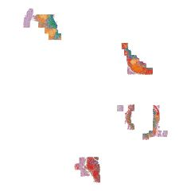
121,924 cells · cell type H&E
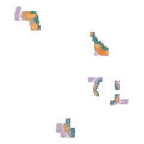
110,229 cells · cell type H&E
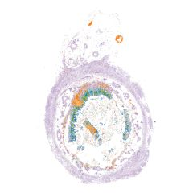
70,352 cells · cell type H&E
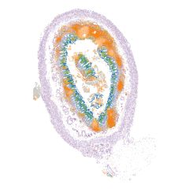
207,341 cells · cell type H&E
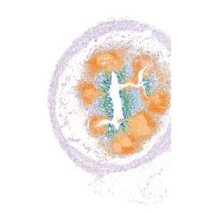
196,218 cells · cell type H&E
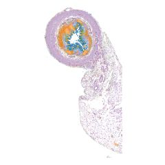
151,937 cells · cell type H&E
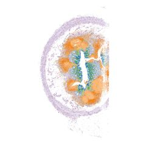
153,439 cells · cell type H&E
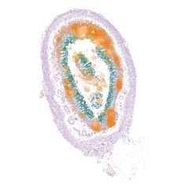
194,370 cells · cell type H&E
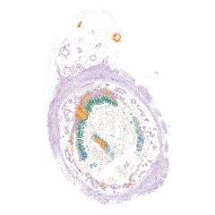
65,855 cells · cell type H&E
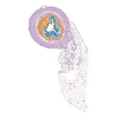
142,621 cells · cell type H&E
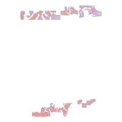
85,394 cells · cell type
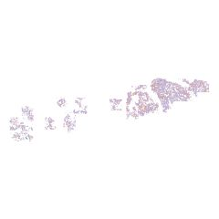
24,537 cells · cell type
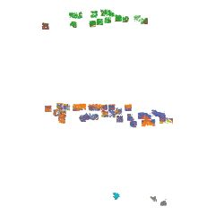
53,611 cells · Leiden cluster
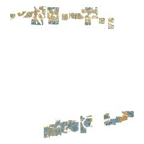
102,352 cells · Leiden cluster
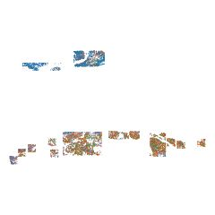
39,969 cells · Leiden cluster
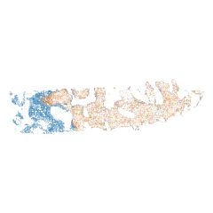
19,321 cells · Leiden cluster H&E
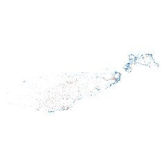
3,614 cells · Leiden cluster H&E
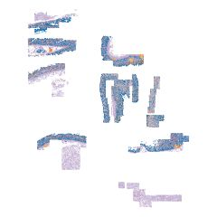
273,467 cells · cell type H&E
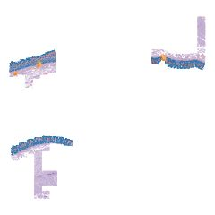
100,087 cells · cell type H&E
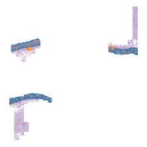
101,618 cells · cell type H&E
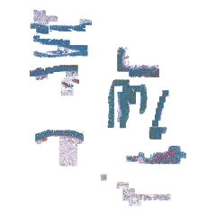
234,372 cells · cell type H&E
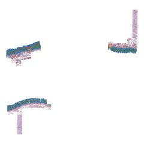
92,636 cells · cell type H&E
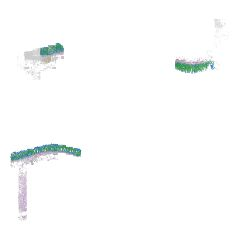
35,267 cells · cell type H&E
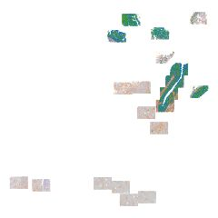
91,168 cells · cell type H&E
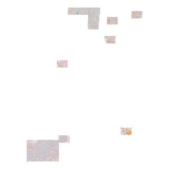
52,752 cells · cell type H&E
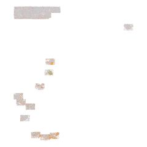
48,554 cells · cell type H&E
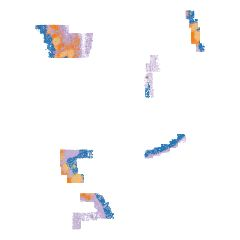
160,232 cells · cell type H&E
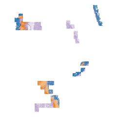
126,824 cells · cell type H&E
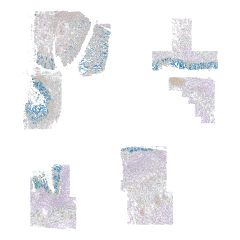
386,896 cells · cell type H&E
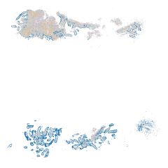
54,003 cells · cell type H&E
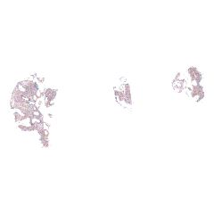
15,340 cells · cell type H&E
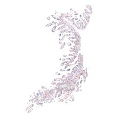
32,171 cells · cell type
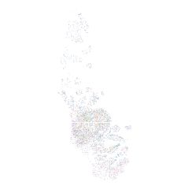
5,954 cells · cell type H&E
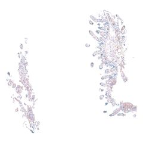
24,419 cells · cell type H&E
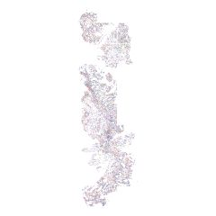
18,756 cells · cell type H&E
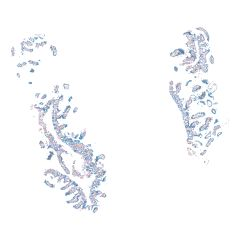
25,622 cells · cell type H&E
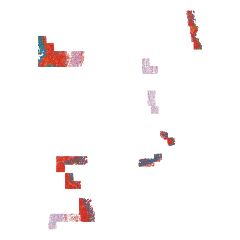
83,485 cells · cell type H&E
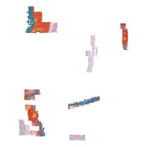
122,996 cells · cell type H&E
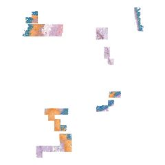
92,628 cells · cell type H&E
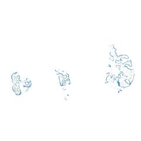
5,138 cells · cell type H&E
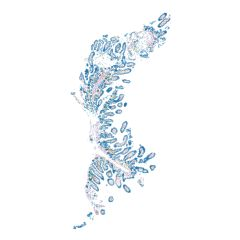
29,312 cells · cell type
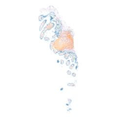
12,812 cells · cell type H&E
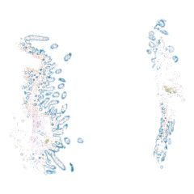
16,736 cells · cell type H&E
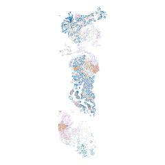
19,289 cells · cell type H&E
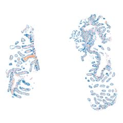
35,147 cells · cell type H&E
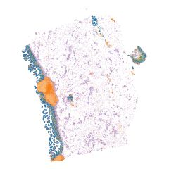
93,456 cells · cell type H&E
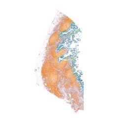
175,121 cells · cell type H&E
134,394 cells · cell type H&E
65,826 cells · cell type H&E
66,676 cells · cell type H&E
43,455 cells · cell type H&E
187,066 cells · cell type H&E
118,332 cells · cell type H&E
102,280 cells · Leiden cluster H&E
80,176 cells · Leiden cluster H&E
31,212 cells · cell type H&E
114,412 cells · cell type H&E
27,834 cells · cell type H&E
113,139 cells · cell type H&E
676,747 cells · cell type H&E
385,989 cells · cell type H&E
515,078 cells · cell type H&E
733,452 cells · cell type H&E
293,365 cells · cell type H&E
308,792 cells · cell type H&E
698,215 cells · cell type H&E
106,718 cells · cell type H&E
701,037 cells · cell type H&E
79,735 cells · cell type H&E
62,395 cells · cell type H&E
78,460 cells · cell type H&E
83,562 cells · cell type H&E
50,690 cells · cell type H&E
75,185 cells · cell type H&E
88,349 cells · cell type H&E
22,979 cells · cell type H&E
63,449 cells · cell type H&E
79,373 cells · cell type H&E
14,482 cells · cell type H&E
81,109 cells · cell type H&E
59,270 cells · cell type H&E
23,596 cells · cell type H&E
22,115 cells · cell type H&E
26,720 cells · cell type H&E
16,627 cells · cell type H&E
59,222 cells · cell type H&E
9,530 cells · cell type H&E
19,917 cells · cell type H&E
25,619 cells · cell type
12,540 cells · cell type H&E
1,185 cells · cell type H&E
24,714 cells · cell type H&E
29,922 cells · cell type H&E
5,172 cells · cell type H&E
14,366 cells · cell type
11,269 cells · cell type H&E
27,184 cells · cell type H&E
15,093 cells · cell type H&E
24,317 cells · cell type
18,755 cells · cell type H&E
16,944 cells · cell type H&E
48,563 cells · cell type H&E
48,828 cells · cell type H&E
29,996 cells · cell type H&E
9,948 cells · cell type
30,344 cells · Leiden cluster H&E
28,858 cells · Leiden cluster H&E
18,950 cells · Leiden cluster H&E
5,894 cells · Leiden cluster H&E
16,337 cells · Leiden cluster H&E
12,488 cells · Leiden cluster H&E
23,347 cells · Leiden cluster H&E
18,817 cells · Leiden cluster H&E
29,646 cells · cell type H&E
17,065 cells · cell type H&E
3,767 cells · cell type H&E
24,911 cells · cell type H&E
22,329 cells · Leiden cluster H&E
11,738 cells · Leiden cluster H&E
11,337 cells · Leiden cluster H&E
20,934 cells · Leiden cluster H&E
294,018 cells · cell type H&E
242,101 cells · cell type H&E
395,564 cells · Leiden cluster H&E
504,208 cells · Leiden cluster H&E
305,676 cells · Leiden cluster H&E
477,932 cells · Leiden cluster H&E